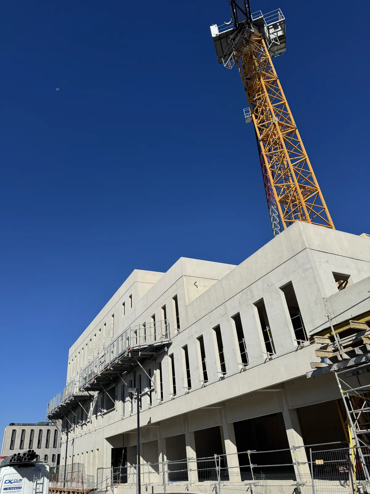
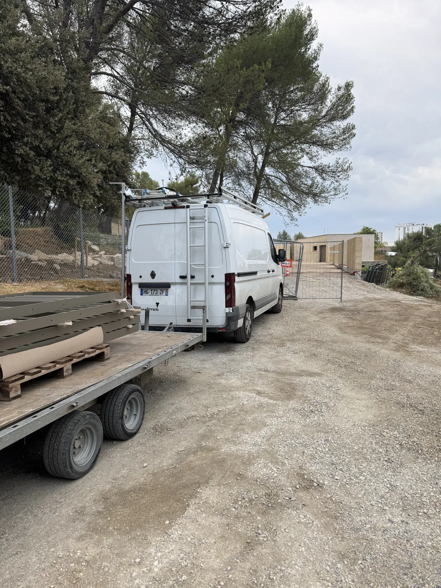

Actualités
La vie de l'atelier
Nouveaux chantiers, partenariats, distinctions : suivez l'actualité de FMG Metal Studio, du Gard à l'ensemble de la France.

Un projet en tête ?
Parlons de votre prochain chantier, du Gard à la Côte d'Azur, et partout en France.
Nous contacter